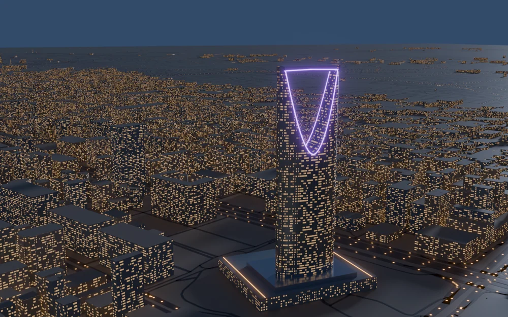

Mapped building footprints
The preview shows dense building massing and warm window patterns around a violet-lit landmark tower.
Mapping data translated into an illuminated scene.
Explore the story
Use urban massing and light to establish a readable cityscape.
The workflow extrudes mapped building footprints and constructs road surfaces. Warm window lights form a dense foreground beneath a violet-lit landmark silhouette.
The preview shows dense building massing and warm window patterns around a violet-lit landmark tower.
The preview places a violet-lit tower above a dense field of warm window lights.
Read-only inspection of the scene-building script shows a workflow that reads mapping data, extrudes building footprints, assigns heights from available tags or estimates, and constructs road surfaces.
Explore the complete compositions and interface states. Select any image for a closer look.
Structure, interaction and visual decisions that give the work its character.
RoleConfirm data preparation, procedural scripting, art direction, lighting and rendering. Original geometry and script authorship remain separate questions.
AssetsThe source names OpenStreetMap data and architectural interpretation. Confirm mapping-data attribution, landmark references, collaborators and any AI-assisted scripting; do not describe the output as a surveyed architectural model.
StatusVisualization preview and selected source code reviewed; architectural accuracy, final output and personal authorship unverified.